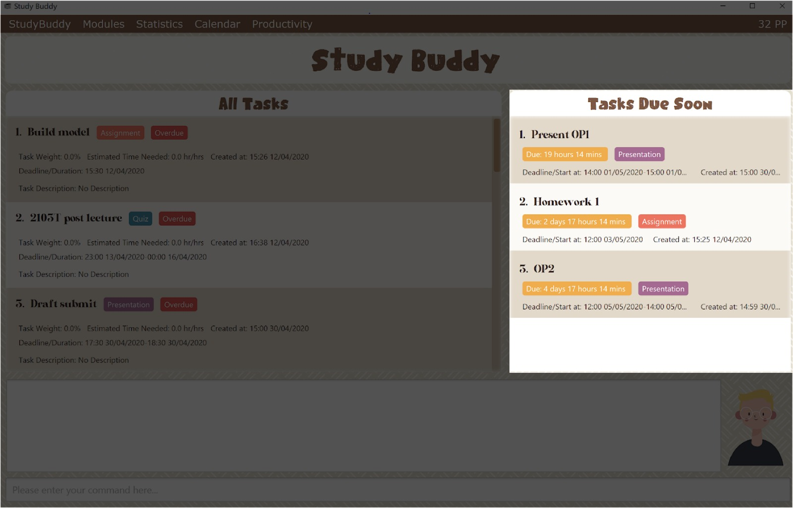
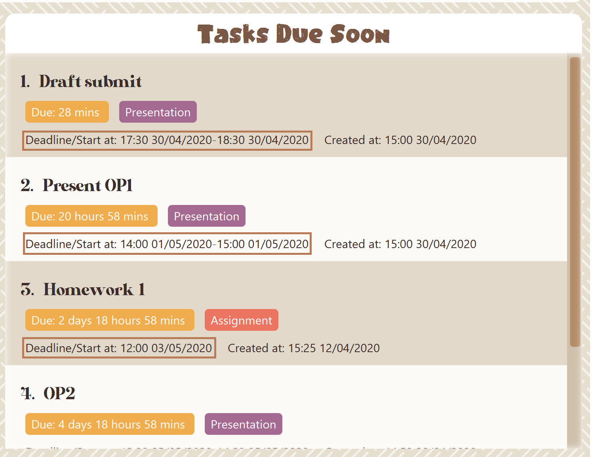

Overview
StudyBuddy is a desktop application designed for students who wish to manage their module related tasks in a convenient and user-friendly interface. It is optimized for those who prefer to work with a Command Line Interface (CLI) but still contains some aspects of Graphical User Interface (GUI) which was written using JavaFX. The codebase is in Java and contains about 13kLoc.
Summary of contributions
Enhancements
-
Major enhancement: designed the interactive process logic
-
What it does:
-
To
-
Loads all due soon tasks (with updated time) into the panel when application is launched.
-
Displays time left before the deadline for each due soon task.
-
Automatically sorts tasks to be in order of most urgent to least urgent deadline.
-
Automatically updates when changes are made to the data (additions, deletions, edits etc).
-
-
Justification: This feature is extremely helpful to the user because it helps to remind them of upcoming deadlines
-
Highlights:
-
This enhancement affects existing commands and commands to be added in future since any command that changes data will affect it.
-
The implementation was challenging because it required changes to be made to a lot of commands.
-
It involved working in the logic, model, storage and UI components of the code base.
-
It also involved changing the GUI.
-
-
-
Major enhancement: added task summary feature
-
What it does:
-
Allows user to refresh due soon task list
-
This command will add any tasks that have recently become due soon
-
It will also update the time left for each deadline on the due soon tasks
-
-
Justification: This feature is extremely helpful to the user because if they have had the application open for a long time, the time left in due soon tasks and the due soon list itself may need refreshing.
-
Highlights:
-
This enhancement formed the foundation code base for a lot of other features that needed to be refreshed. For example, the refreshing of status tags is also done using this refresh class.
-
It required working in the UI, logic and model components of the code base.
-
-
-
Major enhancement: designed the UI/UX of Study Buddy
-
What it does:
-
Allows user to add duplicate tasks in the list.
-
It however automatically appends brackets with a number to the task name of duplicate task.
-
The number corresponds to the number of times task has been duplicated.
-
Ensures that edit and unarchive command do not cause duplication of tasks either.
-
-
Justification:
-
This feature is helpful to the user because the add task command involves adding several fields.
-
We can only detect duplicates at the end of task addition command, hence if the user makes a mistake in one field, they will have to re-enter everything if duplicates are not allowed.
-
This way, user is given a choice whether or not to add duplicate task and they can go back and edit/delete as they like.
-
-
Highlights:
-
This feature was quite difficult to implement because there are several corner cases to take care of.
-
It required working on other commands, such as edit command (to stop user from editing a task to be a duplicate) and unarchive command (because user can unarchive a duplicate task).
-
Since study buddy already had a lot of tests and checks to prevent duplicate tasks, it required a very large amount of refactoring code.
-
-
-
Major enhancement: added the add and edit Task command
-
What it does:
-
Allows user to delete an existing task in the list
-
-
Justification: This feature is extremely helpful to the user because it enables them to remove tasks from their list.
-
Highlights:
-
This enhancement was a crucial command and is also used as a supporting command by a lot of other features.
-
It involved working in the UI, logic and model components of the code base.
-
-
-
Major enhancement: added the edit command
-
What it does:
-
Allows user to filter by status (eg: finished, pending etc) or by type (eg: assignment, quiz etc)
-
-
Justification: This feature is extremely helpful to the user because it enables them to filter their list of all tasks by various categories.
-
Highlights:
-
This enhancement was a crucial command.
-
The implementation was tricky because as the number of choices user was given increased, the checks for exceptions etc became more complex.
-
It involved working in the UI, logic and model components of the code base.
-
-
-
Minor enhancement: added the sort tasks command
-
What it does:
-
Allows user to view all renamed tasks in their list
-
-
Justification:
-
This feature is helpful to the user because they might want to see all the tasks that have auto-edited names in one place, so they can go back and edit.
-
-
-
Minor enhancement: added the Exit command
-
What it does:
-
Allows user to exit the application
-
In case user has entered this command by mistake, provides an option to go back.
-
-
Justification: This feature is extremely helpful to the user because it enables them to exit when needed.
-
Highlights: This enhancement was a crucial command.
-
-
Minor enhancement: added the Clear command
-
What it does:
-
Allows user to delete all data that has been entered
-
-
Justification: This feature is helpful to the user if they decide to start with a fresh Study Buddy.
-
User guide
Given below are sections I contributed to the User Guide. They showcase my ability to write documentation targeting end-users. |
Introduction
(Contributed by Souwmyaa)
Study Buddy is a desktop application which is designed for students who wish to manage their module related tasks. More importantly, Study Buddy is optimized for those who prefer to work with a Command Line Interface (CLI) while still having the benefits of a Graphical User Interface (GUI). This means that while you primarily interact with Study Buddy through text based commands, each command executed will evoke a visual response as well.
You will never have to remember long, wordy commands to use your command line interface, since Study Buddy provides an interactive way of communication. This not only helps prevent typos, but also makes the application much easier to use!
If you can type fast, Study Buddy can get your module management done faster than traditional GUI apps.
The purpose of this document is to explain in detail, how users can utilize the various commands and functions that Study Buddy provides.
Currently, we support both Windows and Mac operating systems. If you are interested, please jump to the [Quick Start] to get started.
Hope you enjoy!
Useful tips
(Contributed by Souwmyaa)
-
You may need to adjust the size of the Study Buddy window when you launch it.
-
The scroll bar on the right of the response box can be used to view the entire reply.
-
At any point during the execution of a command, you can use
quitto quit the command and start over/try a different command. -
Study Buddy will analyze your input and reply accordingly. It utilizes an "interactive command prompt". (explained in each command’s description under [Features])
-
In this document, enter indicates the enter key on your keyboard.
-
In this document, | indicates an alternative option (i.e. A | B implies A or B).
-
A task’s index number, refers to the number displayed on the left of a task in All Tasks Panel. Note that the index of the same task could be different after some commands, such as
filter,findandsort.
Commonly Used Symbols
(Contributed by Souwmyaa)
| This symbol indicates something you should take note of. |
| This symbol indicates a tip that you could use. |
| This symbol indicates an aspect that should be used with caution. |
| This symbol indicates something to which we want to draw your attention. |
Delete
(Contributed by Souwmyaa)
This commands deletes a task from the existing list, using the index provided by you. Index simply refers to the number on the left of the task in the All Tasks panel.
| Once a task is deleted, it cannot be retrieved. Use this command with caution! |
Example:
After having added a task, you realise that there has been a change and you do not need to do that task anymore.
Study Buddy provides you an option to delete that task from the list!
To delete:
-
Initiate the command using keyword
delete -
Study Buddy should respond with:
 Figure 1. Response to 'delete'
Figure 1. Response to 'delete' -
Type the index of the task you want to delete. In this case, the index entered is 1.
 Figure 2. Asks for confirmation
Figure 2. Asks for confirmation -
Press enter again to confirm
-
Task has been deleted! You will notice that the task at the index you selected has disappeared from the list of tasks.
 Figure 3. Updated All Tasks Panel
Figure 3. Updated All Tasks Panel
Add duplicates
(Contributed by Souwmyaa)
This command accounts for you adding duplicate tasks. When you attempt to add a duplicate, the name will be modified slightly so that you can differentiate them.
Example:
Say you have tried to add a task, you enter all the fields needed and at the end, you realise that you have already added this task.
Study Buddy lets you add duplicate tasks with a slight modification! So, now you can add the task and edit it as needed.
| A task is considered duplicate when the name, type, module, description, weightage, estimated time cost and deadline are the same. |
| This feature is case sensitive i.e if you have one task named "Homework" and another named "homework", they will be considered to be different. |
To add duplicates:
-
Follow the same steps as in [Add], but enter a duplicate task.
-
Study Buddy should respond with:
 Figure 4. Reponse to adding a duplicate
Figure 4. Reponse to adding a duplicate -
Type in
yesif you would like to continue andnoif you do not. -
If you type
yesand press enter -
The Study Buddy should respond with:
 Figure 5. Response to adding duplicate
Figure 5. Response to adding duplicate -
As you can see in the snippet above, Study Buddy will append a number in brackets to the task name. This number corresponds to the number of times this task name has been duplicated.
If you add two duplicates of a task (eg: task(1) and task(2)), and then delete task(1), when u try to duplicate it again, it will get added as task(3). The number will not reset to 2, because this is the third time you are attempting to duplicate. -
If you choose to enter
noat step 2, this is what you will see.Figure 6. Response to choosing not to add
| You can view all tasks that have been auto-edited this way, using the View renamed |
| Use the [Edit] to edit your duplicated tasks! |
View renamed
(Contributed by Souwmyaa)
This commands filters all renamed tasks in the list i.e tasks that have a number appended to their names.
Example:
Say you want to go back and edit all the renamed tasks in your list. However, you do not want to scroll through the entire list to find them.
Study Buddy provides you an option to view all your renamed tasks in the list!
| You will still need to navigate to the main list and use that index to perform any index based operations (eg: delete, edit etc) |
To view renamed:
-
Initiate the command using keyword
view renamed -
Study Buddy should respond with:
Figure 7. Response to 'view renamed' -
Press enter again to confirm
-
Renamed tasks have been filtered!
 Figure 8. Updated list of renamed tasks
Figure 8. Updated list of renamed tasks
| In order to navigate back to the main list, use [List] |
Filter
(Contributed by Souwmyaa)
This commands helps you filter your tasks by category. The two categories available are status and type.
| Note that Due Soon tasks are already filtered for you. Refer to Due Soon Tasks |
| To navigate back to your main list, check out [List] |
Example:
Say you want to view a list of all your pending tasks.
Study Buddy provides an option to filter your list!
To filter:
-
Initiate the command using keyword
filter -
Study Buddy should respond with:
 Figure 9. Response to 'filter'
Figure 9. Response to 'filter' -
Enter your choice. If you enter 1, you have chosen to filter by status.
 Figure 10. Response to filter by 'status'
Figure 10. Response to filter by 'status' -
You can then proceed to choose what status type you would like to filter by. Here we have filtered by "Pending" as an example.
 Figure 11. Response to filter by status tag 'Pending'
Figure 11. Response to filter by status tag 'Pending' -
At point 3 above, if you enter 2 instead, you have chosen to filter by task types.
 Figure 12. Response to filter by task 'type'
Figure 12. Response to filter by task 'type' -
Once again, imagine your study buddy currently looks like Figure 30 above. (at point 4)
-
You can then proceed to choose what task type you would like to filter by. Here we have filtered by "assignment" as an example.
 Figure 13. Response to filter by task type 'assignment'
Figure 13. Response to filter by task type 'assignment'
Refresh
(Contributed by Souwmyaa)
This commands refreshes the list of tasks Due Soon as well as status tags.
| Due soon list shows tasks due within the next week. Details are in Due Soon Tasks |
| Status tags include information on the tasks' status, eg: pending, overdue etc. |
Example:
Say you left Study Buddy open for a few days. When you come back, you notice that the time left for the deadline on the Due Soon tasks is not accurate.
You can refresh them!
| Anytime you notice an inconsistency in time left/status, use this command! |
To refresh:
-
Say this is what Study Buddy looks like and you notice that the task "Homework 1" is still in pending status although it should be in due soon status.
Figure 14. Current state (needs to be refreshed) -
Initiate the refresh command using keyword
refreshand press enter to confirm the action. -
Tasks have been refreshed! You will notice that the pending task has now moved to the due soon list and the status has been updated.
 Figure 15. Refreshed Study Buddy
Figure 15. Refreshed Study Buddy
Due Soon Tasks
(Contributed by Souwmyaa)
The Due Soon task list is always on display in your application under Study Buddy → All tasks
It provides the following functionality:
-
It displays your tasks that are due within the next week. (uses deadline you have provided)
Figure 16. Due Soon List -
It automatically sorts these tasks in an ascending order of deadlines.
Figure 17. Due Soon List Auto-Sort -
It automatically adds applicable tasks when you make changes to your main list, such as add ([Add]) or delete (Delete).
-
It displays a tag with the time left to the deadline.
Figure 18. Due Soon List Time Tags -
It provides a Refresh function that allows you to refresh time/state of this list if needed.
| Time left is never displayed in days and minutes. Hence if the current time is 9:00 am on 01/04/2020 and the task deadline is 9:02 am on 02/04/2020, it will show time left as 1 day. (not 1 day and 2 minutes) |
| Due soon list will never display finished tasks. eg: if you unarchive a completed task, it will not appear in the Due Soon list. |
Saving Data
(Contributed by Souwmyaa)
Study Buddy data is automatically saved in the hard disk after any command that changes the data.
There is no need to save manually.
When the application is closed and re-opened, you should be able to see all the data you have added previously!
Clear
(Contributed by Souwmyaa)
This commands clears all data in the Study Buddy.
| Be careful with this command! It will remove any data you may have entered into the Study Buddy and you cannot retrieve it. |
Example:
Say you have finished a semester and would like to clear everything in your Study Buddy and start over.
You can always clear everything!
To clear:
-
Initiate the command using keyword
clear -
Study Buddy should respond with:
 Figure 19. Response to 'clear'
Figure 19. Response to 'clear' -
Type yes and hit enter again to confirm
-
Study Buddy has been cleared completely!
 Figure 20. View empty Study Buddy
Figure 20. View empty Study Buddy -
At step 2, if you choose to type no and hit enter, this is what you will see.
 Figure 21. Response to choosing not to clear
Figure 21. Response to choosing not to clear
Exit
(Contributed by Souwmyaa)
This command exits from Study Buddy.
| All your data will be saved and reloaded when you open the application later! You can find details about this in Saving Data |
Example:
After working all day, you would like to close the application and have a good night’s sleep.
You can always exit the application!
To exit:
-
Initiate the command using keyword
bye -
Study Buddy should respond with:
Figure 22. Response to 'bye' -
Type 'yes' and press enter to exit, the Study Buddy window will close automatically.
-
If instead, you type 'no' and press enter, this is what you will see,
 Figure 23. Response to choosing not to exit
Figure 23. Response to choosing not to exit
You can still use quit command to go back!
|
Command Summary
(Contributed by Souwmyaa)
-
help [Help]
-
add [Add]
-
edit [Edit]
-
archive [Archive/ Unarchive]
-
clear Clear
-
create mods [Create Modules]
-
delete Delete
-
view renamed View renamed
-
done [Done]
-
find [Find]
-
list [List]
-
goal [Goal]
-
filter Filter
-
sort [Sort]
-
refresh Refresh
-
calendar [Calendar]
-
bye Exit
Developer Guide
Given below are sections I contributed to the Developer Guide. They showcase my ability to write technical documentation and the technical depth of my contributions to the project. |
Introduction
Study Buddy is a task-management tool made for students who want to be able to track and manage their tasks in one place.
It uses various visualization tools such as pie charts and calendars, provides useful features such as the Due Soon task list, a productivity tracker etc to make task management simple and convenient.
In particular, Study Buddy is a Command Line Interface (CLI) application that also provides some Graphical User Interface (GUI). This means that users are expected to interact with their Study Buddy mainly through the command line, but each command executed will evoke a visual response as well.
The purpose of this guide is to help potential developers get up to speed on the Study Buddy code base and functionality. We hope that this document will ease the process of further enhancing and developing Study Buddy.
Model component

API : Model.java
The Model,
-
stores a
UserPrefobject that represents the user’s preferences. -
stores the Study Buddy data.
-
exposes an unmodifiable
ObservableList<Task>that can be 'observed' e.g. the UI can be bound to this list so that the UI automatically updates when the data in the list change. -
does not depend on any of the other three components.
Due Soon Tasks Feature
Implementation
The Due Soon Tasks feature allows users to view the tasks that have deadlines within the next week.
This feature is implemented using a panel on the main window with a list of tasks Due Soon that is updated with every command that may affect Due Soon task list (such as add, delete or archive).
Some situations that trigger due soon feature are:
-
When user enters a task:
-
What it does:
-
When a task that is added to the main list, is due within the next week, it is automatically added to the list of due soon tasks.
-
The list is automatically sorted to be in increasing order of deadlines.
-
The time left for the deadline is also added.
 Figure 25. Activity Diagram for Add to Due Soon list
Figure 25. Activity Diagram for Add to Due Soon list{bl}
-
-
Details:
-
The add command when entered by the user, triggers the creation of an object of the InteractivePrompt class (in this case AddTaskInteractivePrompt).
-
In the AddTaskInteractivePrompt class, the data entered by user is parsed.
-
If there are no errors, the AddTaskCommand object is created which triggers the addTask() function in Model.
-
This function in turns calls addTask() function in Study Buddy.
-
This function calls the isDueSoon() function in Task to confirm if the task belong to the due soon list.
-
If it does, it is added to due soon list and main list, and the due soon list is sorted. Else, it is simply added to the main list.
 Figure 26. Sequence Diagram for Add to Due Soon list
Figure 26. Sequence Diagram for Add to Due Soon list{bl}
The lifeline for every member should end at the destroy marker (X) but due to a limitation of PlantUML, the lifeline reaches the end of diagram. {bl}
-
-
-
When user deletes a task:
-
What it does:
-
When a task that is deleted from the main list occurs in the due soon list as well, it is automatically deleted.
Figure 27. Activity Diagram for Delete from Due Soon list{bl}
-
-
Details:
-
The delete command when entered by the user, triggers the creation of an object of the InteractivePrompt class (in this case DeleteTaskInteractivePrompt).
-
In the DeleteTaskInteractivePrompt class, the data entered by user is parsed.
-
If there are no errors, the DeleteTaskCommand object is created which triggers the deleteTask() function in Model.
-
This function in turns calls removeTask() function in Study Buddy.
-
removeTask() calls the updateDeleteDueSoon() function in StudyBuddy which checks if the task exists in the due soon list.
-
If it does, it is deleted from the due soon list and main list. Else, it is simply deleted from the main list.
 Figure 28. Sequence Diagram for Delete from Due Soon list
Figure 28. Sequence Diagram for Delete from Due Soon list{bl}
The lifeline for every member should end at the destroy marker (X) but due to a limitation of PlantUML, the lifeline reaches the end of diagram.
-
-
| Other commands like edit, archive etc also trigger due soon feature in a similar manner. |
-
When user refreshes due soon list:
-
What it does:
-
Refreshes the list of due soon tasks and status tags. This command is useful for a situation where due soon list is not up to date due to a drastic change in time.
 Figure 29. Activity diagram for refresh
Figure 29. Activity diagram for refresh{bl}
-
-
Details:
-
The refresh command when entered by the user, triggers the creation of an object of the InteractivePrompt class (in this case RefreshTaskInteractivePrompt).
-
In the RefreshTaskInteractivePrompt class, the data entered by user is parsed.
-
If there are no errors, the RefreshCommand object is created which clears the due soon list and then, iterates through the main list and calls addDueSoonTask() in Model, for any tasks that are due soon.
 Figure 30. Sequence diagram for refresh
Figure 30. Sequence diagram for refresh{bl}
The lifeline for every member should end at the destroy marker (X) but due to a limitation of PlantUML, the lifeline reaches the end of diagram.
-
-
-
When the application launches:
-
What it does:
-
It loads the due soon tasks into a panel by filtering tasks that are due soon from the main list.
-
This is necessary, because old list of due soon tasks may not be up-to-date.
-
-
Details:
-
The addTask() function in StudyBuddy class already checks if task is due soon and adds to due soon list (as mentioned above).
-
While all tasks are being added to their respective lists in JsonSerializableStudyBuddy class, the due soon list gets automatically updated.
-
-
| Calculation of time left for deadline and check for if task is due soon can be found in the Task class. |
Use case: List task
MSS
-
User is on the
All tasksorproductivitytab. -
User requests to list tasks
-
Study Buddy shows a list of unarchived tasks
Use case ends.
Use case: Delete task
MSS
-
Refer to List task use case
-
User requests to delete a specific task in the list
-
Study Buddy asks for the index
-
User provides index
-
Study Buddy deletes the task
Use case ends.
Extensions
-
2a. The list is empty.
Use case ends.
-
3a. The given index is invalid.
-
3a1. Study Buddy shows an error message.
Use case resumes at step 2.
-
Use case: Filter tasks
MSS
-
User requests to filter tasks
-
Study Buddy shows two options for filter
-
User requests to filter by status
-
Study Buddy provides options to filter by status
-
User provides input
-
Study Buddy shows filtered task list
Use case ends.
Extensions
-
3a. The given index is invalid.
-
3a1. Study Buddy shows an error message.
Use case resumes at step 2.
-
-
3a. User chooses to filter by type instead.
-
4a. Study Buddy provides options to filter by type
Use case resumes at step 5.
-
Use case: View renamed
MSS
-
User requests to view renamed tasks
-
Study Buddy shows a list of renamed tasks
Use case ends.
Extensions
-
2a. The list is empty.
Use case ends.
-
3a. There are no duplicate tasks
Use case ends.
Use case: Refresh
MSS
-
User notices Due Soon list needs to be updates
-
User requests to refresh
-
Study Buddy refreshes the Due Soon list and status tags
Use case ends.
Extensions
-
2a. The list is empty.
Use case ends.
-
3a. There is nothing to refresh
Use case ends.
Appendix A: User Stories
Priorities: High (must have) - * * *, Medium (nice to have) - * *, Low (unlikely to have) - *
| Priority | As a … | I want to … | So that I can… |
|---|---|---|---|
|
new user |
see usage instructions |
refer to instructions when I forget how to use the App |
|
user |
view a list of my tasks |
know what I have Pending |
|
user |
add a new task |
view all my tasks in one place |
|
user |
delete a task |
remove entries that I no longer need |
|
user |
mark a task as completed |
update my list of Pending tasks |
|
user |
find a task by keyword |
locate details of a task without having to go through the entire list |
|
user with task deadline extended |
edit the particular task |
update my task accordingly |
|
user with many deadlines |
sort tasks in order of deadlines |
organise my list by priority |
|
user |
archive tasks |
separate the tasks that are not applicable right now |
|
user |
view renamed tasks |
easily filter out any renamed data in my list |
|
user |
filter all pending tasks |
view all my Pending tasks in one place |
|
user who likes organization |
view all my tasks that are Due Soon |
know what to focus on in the next week |
|
user who makes typos |
be able to edit a task I have added |
correct any typos I have made |
|
user who is forgetful |
have an interactive command prompt |
not have to remember long commands |
|
user who is starting a new semester |
clear all my tasks |
start adding on to an empty list |
|
user who takes many modules |
add my modules |
view my modules |
|
user who has many tasks |
check the summary of their current status |
better plan my time |
|
user who has many tasks |
check the summary of their current status |
better plan my time |
|
user who finds it hard to keep track of all my deadlines |
have a calendar |
easily find tasks due on a day |
Saving data
-
Dealing with missing/corrupted data files
-
Prerequisites: Delete the "tasklist.json" file from data folder.
-
Test case: Launch the application
Expected: The application indicates that the data file needed is missing and creates one. c -
Prerequisites: Modify the "tasklist.json" file to show some incorrect data.
-
Test case: Launch the application
Expected: The application indicates that the data file is corrupted. Application launches successfully but has no data.
-
-
Diagrams:
Team-based Tasks
-
Refactored all occurrences of Address Book to Study Buddy. Link to PR Refactor
-
Added the introduction, commonly used symbols, summary and useful tips sections to user guide. Links to PR Useful tips and symbols and Introduction
-
Added the introduction to developer guide. Link to PR Introduction
-
Added the Study Buddy icon. Link to PR Logo Update
-
Added all labels and milestones to the issue tracker.
-
Attempted to find bugs in all team members code to help them fix any issues. Example issue Bug in Tags
-
Helped maintained consistency in UG and DG by editing some other team member’s parts and diagram colors. Link to PR Consistency in Documentation
-
Revised documentation and notified members if they had missed a certain feature/aspect that could cause confusion to users/testers. Example issue Reminder to edit UG
-
Wrote test cases for error-prone classes, even if they were not mine. The following links Parser Tests and Interactive Prompt tests display my team testing work.
-
Contributed to the forum.
Review/Mentoring
-
If a fellow team member’s PR did not pass the tests required, I left helpful comments in order to reduce their work load. eg: https://github.com/AY1920S2-CS2103T-W16-3/main/pull/59
-
Reviewed another team’s DG and provided useful feedback. Review 1 and Review 2